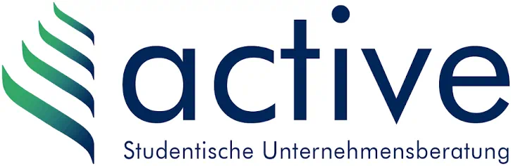
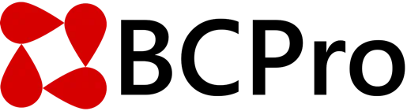
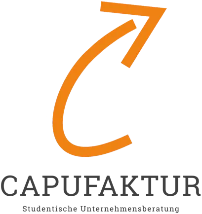
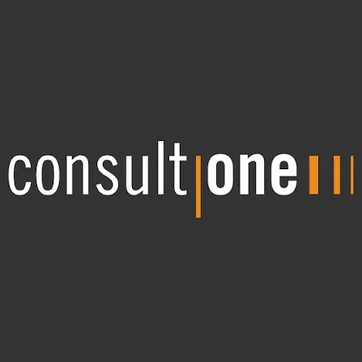
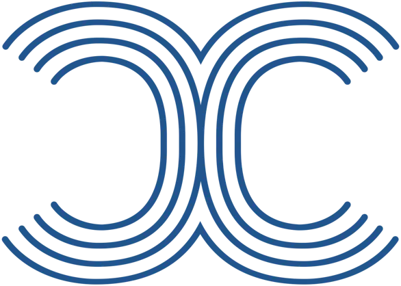
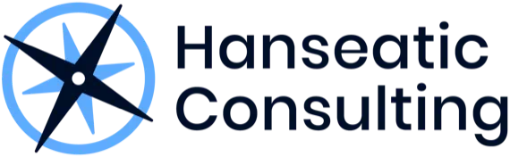
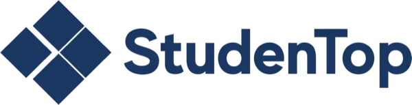
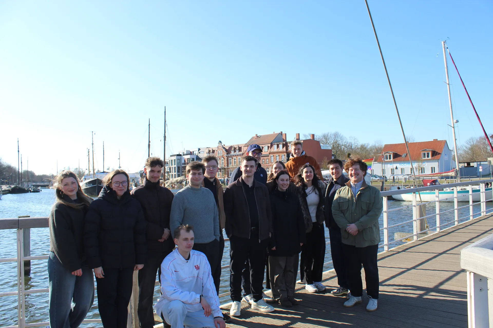
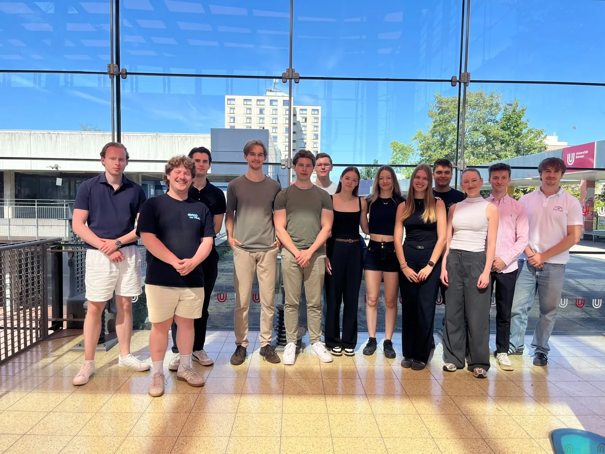

Persönliche Beziehungen
Weil man sich über die Treffen hinweg immer wieder begegnet, entstehen aus ersten Kontakten echte Freundschaften – ein fester Kreis an Vertrauten in ganz Norddeutschland.
Northern Consulting Network
Zehn studentische Unternehmensberatungen aus Norddeutschland treffen sich viermal im Jahr, jedes Mal in einer anderen Stadt. Nicht einmal, sondern immer wieder.
01Was ist das NCN?
NCN steht für Northern Consulting Network: ein Netzwerk studentischer Initiativen aus verschiedenen Städten im Norden Deutschlands.
Ziel ist es, die Initiativen und ihre Mitglieder über die Grenzen der eigenen Stadt hinaus zu verbinden – durch regelmäßige, wiederkehrende Treffen, bei denen man sich nicht nur einmal, sondern immer wieder sieht.







02Was bringt das NCN seinen Mitgliedern?
Weil man sich über die Treffen hinweg immer wieder begegnet, entstehen aus ersten Kontakten echte Freundschaften – ein fester Kreis an Vertrauten in ganz Norddeutschland.
Jede Initiative tickt anders. Im direkten Gespräch bekommt man Perspektiven auf Bereichsarbeit, Vereinsführung und Projektarbeit, die man in der eigenen Initiative so nicht hätte.
Man sieht, wie andere mit ähnlichen Themen umgehen – im Umgang mit Verantwortung, in der eigenen Rolle oder ganz persönlich – und entwickelt sich weiter.
Jedes Treffen findet in einer anderen Stadt statt. Man lernt nicht nur neue Orte, sondern auch die jeweilige lokale Community kennen.
03Die Treffen im NCN

GreifswaldZwei größere, etwas formellere Treffen mit gemeinsamer Übernachtung, zeitlich vor den BDSU-Kongressen, damit man schon vorher Kontakte knüpft. Mit Workshops, einem Plenum zu wichtigen Netzwerk-Themen und einem gemeinsamen Rahmenprogramm. Zuletzt: das Haupttreffen in Greifswald.

BremenZwei informellere Treffen ohne festen Ablauf, vor allem für den Austausch untereinander: ein Weihnachtsmarktbesuch, eine Bartour oder ein Strandtag in einer der norddeutschen Mitgliedsstädte. Zuletzt: das Social in Bremen.
04Wie ist das NCN organisiert?
Jedes Treffen richtet eine andere Initiative vor Ort aus. So wandert das NCN von Stadt zu Stadt, und die Gastgeberrolle rotiert durch das Netzwerk.
05Was macht das NCN besonders?
Anders als bei einmaligen Veranstaltungen begegnen sich die Mitglieder durch die wiederkehrenden Treffen immer wieder, sodass Beziehungen wachsen können, statt nach einem einzigen Treffen gleich wieder abzureißen.
Gleichzeitig bringt jedes Treffen neue Gesichter, neue Städte und neue Perspektiven aus den unterschiedlichen Initiativen mit sich. So entsteht ein lebendiges, norddeutsches Netzwerk junger Menschen, die sich für unternehmerisches Engagement, Beratung und ehrenamtliche Vereinsarbeit interessieren.